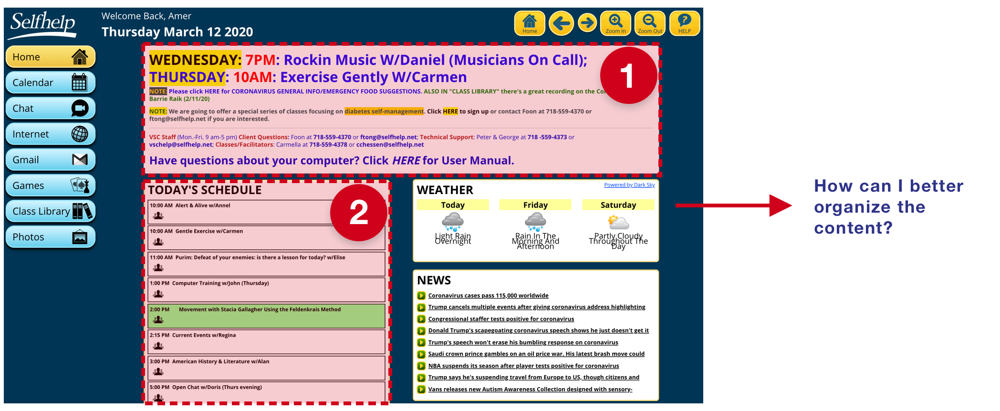

User Interview, Information Architecture, Context Inquary, User
Flows, Wireframes, Usability Test, Iteration
TEAM
1 UX/UI Designer
1 PM
2 Developers
TIMELINE
Jan 2020 - March 2020
The Project
But thanks to the
Virtual Senior Center (VSC), operated by Selfhelp, homebound seniors’ time is filled with intellectual and cultural
riches. Moreover, homebound seniors have the chance to take part in
live-stream classes, museum-hosted tours, interact with peers, and
learn wellness tips from their own homes.
While I joined the project, the
Virtual Senior Center
was planning to develop their next generation, which was intended to
adopt an iterative UI design while making the product more
accessible and understandable
for users.
A glimpse of the product
Design
As the only designer in this project,
I did 3 iterations within 3 months, collaborated with 1 PM, and 2
engineers. I worked on sketches, wireframes, prototype and visual design.
Here are my design stories.
Iteration 1
Considering stakeholders’ requirements,
“we would like to have an iterative user interface”, we started design from scratch, analyzed Information Architecture
and Navigation Structure. Then, reflected this information in a
clear visual hierarchy to organize related content.
The first decision to make is where to put the navigation:
I decided to go with the left navigation.
Why?
1. Since the final number of navigation items is
unknown at this time (i.e., there are 8 sections in the current site
and more may be added in the future),
it's easier to scale
when the main navigation block is placed in the left rail than a
horizontal orientation.
2. Considering that our target users are seniors,
I decided to avoid navigation changes (original site uses left
navigation). According to Nielsen Norman Group research study, majority of
seniors keep a list of steps and instructions about how to use
websites. If such a website changes drastically, seniors could
struggle to understand the new design. I believe it’s worth trying
to maintain consistency in navigation structure.
Once I decided on the pattern of navigation, I then started to
design the visual representation of the content.

I decided to adopt card UI pattern for announcement &
notification. Presented multiple well defined rectangular cards with different
bits of information and illustrations.
Why?
1. The original design contains too many words in
one card it would be difficult for visually impaired seniors to
read.
2. I believe multiple
cards with illustrations could boost hierarchy, scannability and
assists in promoting information.
3. Cards can hold together many different elements
keeping them unified within larger groups. By using illustrations,
colour and shadow, cards bring elements into the foreground,
indicating interaction and importance.
4. Plus,
multiple cards can also achieve content separation.
They can serve as visual identifiers, helping users more easily
recognize which section is which.
I replaced horizontal lines with white space to separate related
sections of today’s schedule.
Why?
1. A heavy use of horizontal-line dividers can also
lead to visual noise and dense, crowded interfaces. They take up
valuable space on the card.
2.White space can make the interface look inviting and simple. It also boosts visual hierarchy and information flow,
contributing in easy to read and scan layouts. It will help seniors
locate interesting classes and delve deeper into the content.
Iteration 2
After I completed iteration 1, I discussed the original categories
and contents with PM & social workers and made some adjustments. To
ensure the information we provide is reasonable and understandable,
I conducted hybrid card sorting with 5 users to see their
preferences.
I decided to remove “Internet” & “Photos” these two categories
from the menu, and switched the order of “Games” and “Class
Library”.
Why?
1. According to the Card Sorting research, users
indicated that they are less likely to check or post their photos.
Since their physical conditions wouldn’t allow them to do activities
outdoors frequently, and they have low desire to share “stay at
home” life. Meanwhile, users prefer to visit “Google”, “Facebook”,
these websites directly instead of being directed from the third
party.
2. I switched the order of “Games” and “Class
Library” to encourage users to watch the past videos of events,
avoiding spending too much time on games.
Iteration 3
Next, I would love to talk about what are the hesitation points and
struggles when going through the main flow -
take the livestream classes they are interested in.
The essence of the calendar is to help users review available
classes & events and attend the livestream classes & events.
Compared with applying 2 tabs to separate class schedules and
upcoming events users confirmed to attend,
I decided to design default mode to present all the information
on the same page.
Why?
Default modeI not only reduced the steps of interaction but also
supported user control and freedom at the same time. By using dark and light colors, users can easily distinguish
confirmed events from TBD events. Meanwhile users are flexible to
manage their classes and events with minimum steps.
Although all of the users completed the given tasks from First
Click Testing.
I did notice that some users took longer time to locate the target
classes. According to the follow up interview, I understood that
because of the nature of the class schedule, most users browsed and
reviewed classes info. But some users had strong preferences of
specific teachers or class types.
I decided to add a site search box for this group of users to find
the content they are looking for more effectively.
During the contextual inquiry, I observed users went through the
whole process from selecting a class to attending a class. I was
aware that seniors can have trouble identifying content because of
vision impairment.
I decided to put an adjustable built-in magnifier on the header
bar which would allow users to quickly zoom in.
I also allow users to set their preferred font size in the
setting page, so that they can see suitable text size without any hassle. Let
people adjust text size themselves.
When I was watching users attending virtual classes, sometimes they
had difficulties catching up with teachers.
I believe that live captions can benefit users in a virtual meeting room if there are hearing impaired users,
audio issues, non-native speakers of English, or a person who missed
a phrase.
The original virtual meetings were on the Zoom platform, however
Zoom doesn’t provide live captions. Considering the class size, our
budget and needed services,
I recommended Google Meet.
Google meet with live captions can help users fully participate in
the event and make classes/events more accessible by reducing
barriers to holding meetings between users of different hearing
abilities.
Scenario Walkthrough
The key feature of this product is virtual class/event. Based on
this feature, I will go through user scenarios with you.